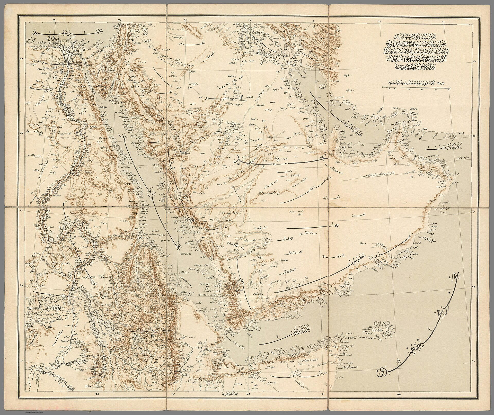

КСИР Ирана заявил, что ежедневно наносит удары по судам в Ормузском проливе
Представитель КСИР Хоссейн Мохебби заявил, что иранские силы регулярно наносят удары по малым судам в Ормузском проливе; при этом при посредничестве Катара обсуждается предложение о возобновлении судоходства.

Представитель Корпуса стражей исламской революции (КСИР) Ирана Хоссейн Мохебби заявил 30 сентября, что в Ормузском проливе ежедневно происходят военные столкновения. По его словам, иранские силы наносят удары по малым судам и препятствуют их проходу через стратегический водный путь. Это заявление не удалось полностью подтвердить из независимых источников.
Что известно
Британская организация морской торговли (UKMTO) сообщила о судах, повреждённых предполагаемыми снарядами; по меньшей мере одно из них загорелось, но пожар был потушен. Мохебби описал ситуацию как ежедневные «военные столкновения».
Почему это важно
Ормузский пролив — стратегический водный путь, через который проходит около 20% мировой нефти (Управление энергетической информации США). Любая напряжённость в проливе может повлиять на мировые цены на нефть.
Переговоры
При посредничестве Катара между США и Ираном обсуждается предложение: Иран вновь откроет Ормузский пролив, а США снимут блокаду иранских портов. Однако сохраняются серьёзные разногласия относительно последовательности шагов.
Мы уже давно наносим удары по малым судам и не даём им пройти, а Америка на это не реагирует.
— Хоссейн Мохебби, представитель КСИР, 30 сентября